Obsah
Duchovní literatura
Svìtská literatura
Støedovìké divadlo
Staroslovìnská literatura
Latinská literatura v Èechách
Staroèeská literatura
Karel IV. a jeho doba
Husitské písemnictví
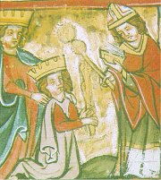
Korunovace císaøe Karla Velikého pape�em
|
EVROPSKİ STØEDOVÌK
Stìhování národù zaèalo vpádem Hunù, ale pøi osidlování Evropy byli nejúspìšnìjší Germáni, kteøí vytlaèili keltské obyvatelstvo a znièili západoøímskou øíši, a Slované. Na podobì støedovìké Evropy se podílela øada odlišnıch civilizací. Pyrenejskı poloostrov patøil a� do roku 1492 muslimùm. Jihovıchod Evropy ovládala byzantská øíše, kterou vyvrátili muslimští Turci (v roce 1453 dobyli Konstantinopol a zastaveni byli a� v roce 1683 u Vídnì). Barbarské státy postupnì pøijímaly køes�anství buï z Øíma (latinská církev), nebo z Konstantinopole (øecká církev). Nejvìtším z nich byla franská øíše (482-843), která se rozkládala na území dnešní Francie, Itálie a Nìmecka. �idùm, kteøí �ili v diaspoøe po celé Evropì, byla upírána základní práva (bydleli v uzavøenıch ghettech a museli èelit pogromùm).
Církev byla jedinou institucí, která pøe�ila pád západoøímské øíše. Peèovala o šíøení køes�anství, ale zároveò usilovala o svìtskou moc. Dostávala se tak do konfliktu s panovníky, kteøí naopak chtìli zasahovat do vìcí církevních. Vše zaèalo sporem o investituru mezi pape�em a císaøem Svaté øíše øímské, kterı skonèil kompromisem. Dokázali se shodnout na køí�ovıch vıpravách, ale kdy� francouzskı král zajal pape�e, ocitla se církev v krizi.
|
Periodizace
Nejèastìji je za zaèátek støedovìku pova�ován pád západoøímské øíše (476 n.l.), tato nová epocha ale pøicházela postupnì bìhem dlouhého období stìhování národù (4. a� 6. stol. n.l.). Dalším vıznamnım mezníkem bylo uzavøení antickıch škol (529 n.l.) vıchodoøímskım císaøem Justiniánem. Vítìzství køes�anství nad pohanstvím bylo také velmi postupné a v Evropì trvalo nìkolik staletí. Støedovìk dìlíme na ranı (5. a� 11. stol.) vrcholnı (1050-1300) a pozdní (14. a� 15. stol.). Za jeho konec je pova�ován rok 1492, kdy Kolumbus objevil Ameriku. Dùle�itım mezníkem byl také vynález knihtisku (1445) nebo nástup reformace (1517).
|
Umìlecké slohy
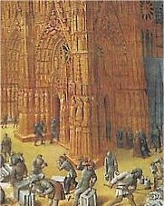
|
Umìlecké slohy
Barbarské kmeny si pøinesly vlastní kulturu, ale ta postupnì splynula s køes�anskım umìním. Od vzniku køes�anství v 1. stol. n.l. a� do 6. stol. mluvíme o ranì køes�anském umìní. V èásti Evropy na nìj plynule navazuje umìní byzantské, které se prosadilo na územích pod vlivem vıchodní (øecké) církve. V 9. stol. dochází k velkému rozvoji umìní na dvoøe císaøe Karla Velikého (karolinská renesance). Jednotnı románskı sloh se prosadil a� v 11. stol. Ve 12. stol. ho vystøídala gotika (pùvodnì hanlivı název umìní barbarskıch Gótù mu dali v dobì renesance humanisté). Umìlecká díla èasto vznikala na zakázku církve, jejich autory vìtšinou neznáme.
Popiš hlavní rysy ranì køes�anského umìní, románského slohu a gotiky.
|
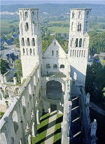
|
Pohanské tradice
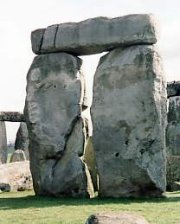
|
Pohanské tradice
Øekové a Øímané pova�ovali ostatní obyvatele Evropy za barbary. Keltové, Germáni nebo Slované se s nimi sice nemohli mìøit, ale i tyto národy mìly své tradice (kulturu, mytologii), které si uchovaly i po pøijetí køes�anství. Našly si místo v lidové slovesnosti (nadpøirozené bytosti, povìry) a ovlivnily i nároènìjší umìleckou tvorbu – islandské Eddy (bohové Odin, Thor a Loki), nìmecká Píseò o Nibelunzích (trpaslíci), artušovské legendy (èarodìj Merlin) atd. Slovanská mytologie se bohu�el nedochovala, známe pouze jména a funkce nìkterıch bohù (Perun, Svarog, Da�bog, Triglav, Radegast, Veles, Mokoš, Svantovít…).
Znáš nìjakı pøíbìh z germánské mytologie?
Co víš o slovanskıch bozích?
|
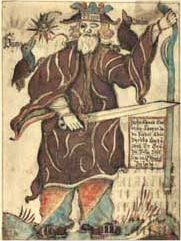
|
Latinské písemnictví
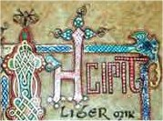
|
Latinské písemnictví
Latina byla oficiálním jazykem katolické církve. Díky tomu se mezi sebou domluvili všichni evropští vzdìlanci. Latinsky psali teologové i umìlci. Jen nìkolik lidí ovládalo navíc øeètinu nebo hebrejštinu a mohlo pøekládat antické spisy do latiny. Knihy, které nebyly do latiny pøelo�eny, jako by ani neexistovaly. Proto�e èasto neznáme autory ani názvy jednotlivıch dìl, oznaèujeme je prvními slovy, která vìtšinou následovala po slovì incipit (zaèíná se).
|
Latina
Z mluvené (vulgární) latiny vznikly románské jazyky. O které jazyky se jedná?
Které profese pou�ívají latinu i v souèasnosti?
Co je mrtvı jazyk?
Které vymøelé jazyky znáš?
K èemu mù�e bıt dobré tyto jazyky ovládat?
|
Národní literatury
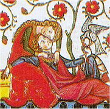
|
Národní literatury
Vedle latinskıch textù zaèínají vznikat i vıznamná literární díla v národních jazycích (anglickı epos Beowulf, okcitánská kurtoazní poezie, francouzská Píseò o Rolandovi, španìlská Píseò o Cidovi, ruské byliny...).
Postupnì se do nich pøekládají vıznamné texty poèínaje Biblí a nábo�enskımi knihami a konèe beletrií. Zatímco pøi pøekladech Bible zále�elo na ka�dém slovu, pøekladatelé umìleckıch textù pracovali s pùvodními námìty velmi volnì.
Jednotlivé národy pøizpùsobily existující písmo svım jazykùm. Tato písma se dále vyvíjela samostatnì a ka�dé se vydalo jinou cestou.
|
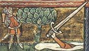
Kterımi dalšími jazyky se mluví v Evropì?
Co je jidiš?
|
Písemnictví na èeském území
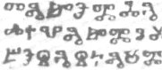
|
Písemnictví na èeském území
Nejstarší literární památky (Proglas, píseò Hospodine, pomiluj ny) vznikly po roce 863 na území Velké Moravy díky èinnosti Konstantina a Metodìje, kteøí zde šíøili køes�anství ve staroslovìnštinì a vytvoøili pro ni speciální písmo – hlaholici. Èeská kní�ata dala v 10. stol. pøednost pape�i a latinské kultuøe (legendy, Kosmova Kronika èeská). Od 13. stol. se zaèíná psát èesky (píseò Svatı Václave, èeská Alexandreida) a nìmecky (Oráè z Èech).
|
Do kterıch skupin dìlíme slovanské jazyky?
|
Støedovìká vzdìlanost
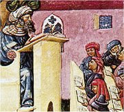
Disputace na støedovìké univerzitì
|
Støedovìká vzdìlanost
Centrem støedovìké vzdìlanosti byly kláštery, kde mniši opisovali knihy, a sídla církevních hodnostáøù (pape�, arcibiskupové, biskupové), kde se nacházely katedrální školy pro budoucí knìze. Ve 12. stol. zaèaly vznikat první univerzity, které nabízely studium teologie, medicíny, práv a svobodnıch umìní (artistická fakulta). Nejvıznamnìjší univerzitou byla paøí�ská Sorbonna. Vzdìlávání bylo rozdìleno na trivium (gramatika, rétorika, logika) a kvadrivium (aritmetika, geometrie, astronomie, múzika). Na univerzitách mohli studovat i laici (šlechtici, mìš�ané), kteøí neusilovali o dráhu duchovních. Dìti šlechticù se vzdìlávaly spíše v šermu a jízdì na koni. Prvorozenı syn dìdil majetek, ostatní èekala dráha knìze. Mìš�ané se sdru�ovali do mistrovskıch cechù, které si vychovávaly mladé tovaryše.
|
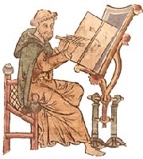
Mnich linkuje stránky v knize.
|
Vznik knihy
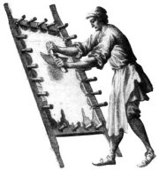
Pøíprava pergamenu byla velmi nároèná.
|
Vznik knihy
Ve støedovìku zaèaly bıt nahrazovány papyrové svitky volnımi obdélníkovımi listy pergamenu nebo papíru, které se na jedné stranì sešily, aby se v nich dalo listovat. Tak vznikly první kodexy. Z nich se pozdìji vyvinula kniha s pevnou ko�enou vazbou. Støedovìké knihy byly velmi drahé (pergamen se vyrábìl z kù�e zvíøat, obálka bıvala posázena drahokamy) a vzácné (psaly se ruènì husím brkem, obsahovaly øadu obrázkù).
Pergamen se zaèal pou�ívat v Persii (6. stol. pø.n.l.), odkud se dostal do Øíma a bìhem 4. stol. n.l. se rozšíøil po celé Evropì. Šlo o vyèinìnou kù�i ovcí a koz. Materiál byl trvanlivı, ale velmi drahı, proto se pou�íval opakovanì. Staré písmo se vyškrábalo, èím� vznikl tzv. palimpsest, na kterı se mohlo opìt psát.
Papír se dostal do Evropy prostøednictvím Arabù a� v roce 1154, tedy 1000 let po jeho vynálezu v Èínì. První papírna byla postavena ve Španìlsku. Nevyrábìl se ze døeva jako dnes, ale z textilních vláken (staré provazy, látky...).
|
Kodexy nemìly pevnou vazbu.
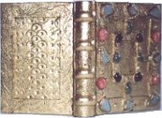
Støedovìké knihy bıvaly pozlacené a vykládané drahokamy.
|
Internetové stránky
Ústav pro klasická studia
Cornwell scribe works, iluminované rukopisy
Early Medieval Painting, galerie
Gotika, informace, reprodukce
Gotika, informace, reprodukce
Støedovìk na Seznamu, odkazy
Evolution of the medieval Book, historie
Art roman, románské umìní
Paleografická èítanka, rukopisy
Digitální knihovna NK, rukopisy
Cennino D' Andrea Cennini: Kniha o umìní støedovìku
Exkurze
Faber, støedovìké mìsto
Velké Losiny, ruèní papírna
Carcassone, francouzské støedovìké mìsto
|
Doporuèená èetba
Beranová, Magdalena: Slované, Panorama, Praha 1988
Curtis, E.R.: Evropská literatura a latinskı støedovìk
Dìjiny èeského vıtvarného umìní I, Od poèátku do konce støedovìku
Dostálová, R.: Byzantská vzdìlanost, Praha 1990
Edda, pøel. L.Heger, SNKLU, Praha 1962
Franzen, August: Malé církevní dìjiny, Zvon, Praha 1992
Greenová, M.J.: Keltské mıty, pøel. M.Kováø, NLN, Praha 1998
Kidson, P.: Románské a gotické umìní, pøel. J.Solperová, Praha 1973
Lassus, J.: Rané køes�anské a byzantské umìní, pøel. K.Benda, Praha 1971
Le Goff, J.: Kultura støedovìké Evropy, pøel. I.Murasová, Praha 1998
Le Goff, J.: Støedovìká imaginace, pøel. J.Èermák, Praha 1991
Matthew, Donald: Svìt støedovìké Evropy, Kni�ní klub, Praha 1996
Page, R.I.: Severské mıty, pøel. J.Odehnalová, NLN, Praha 1997
Petoia, Erberto: Støedovìké mıty a legendy, pøel. I.Kurzová, Volvox globator, Praha 1998
Pijoan, José: Dìjiny umìní, 3. a 4. díl
Spunar, Pavel: Kultura èeského støedovìku, Odeon, Praha 1987
Ulmann, Ernst: Svìt gotické katedrály, Vyšehrad, Praha 1987
Váòa, Zdenìk: Svìt slovanskıch bohù a démonù, Panorama, Praha 1990
Vıbor z èeské literatury od poèátkù po dobu Husovu
Zástìrová, B.: Dìjiny Byzance, Praha 1992
|
Pøiprav si referát o nìkteré z uvedenıch knih nebo internetovıch stránek.
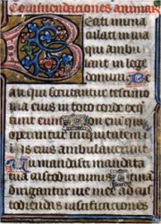
Støedovìkı rukopis
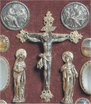
Strahovskı evangeliáø
|
|